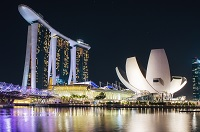
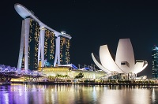
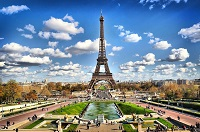

Singapur
Singapur formó parte de la Malasia británica durante casi dos siglos. Fue gobernada por el Sultanato de Johor. En 1819, los británicos llegaron a la isla y construyeron un puerto y una colonia...seguir leyendo
Singapur formó parte de la Malasia británica durante casi dos siglos. Fue gobernada por el Sultanato de Johor. En 1819, los británicos llegaron a la isla y construyeron un puerto y una colonia...seguir leyendo
El turismo es una de las principales actividades económicas de la ciudad, ya que por ella pasan 40 millones de turistas nacionales y extranjeros cada año.79 Entre los principales destinos se encuentran el edificio Empire State, la isla Ellis, las producciones teatrales de Broadway, museos como el Metropolitano de Arte,....seguir leyendo
El turismo es una de las principales actividades económicas de la ciudad, ya que por ella pasan 40 millones de turistas nacionales y extranjeros cada año.79 Entre los principales destinos se encuentran el edificio Empire State, la isla Ellis, las producciones teatrales de Broadway, museos como el Metropolitano de Arte,....seguir leyendo